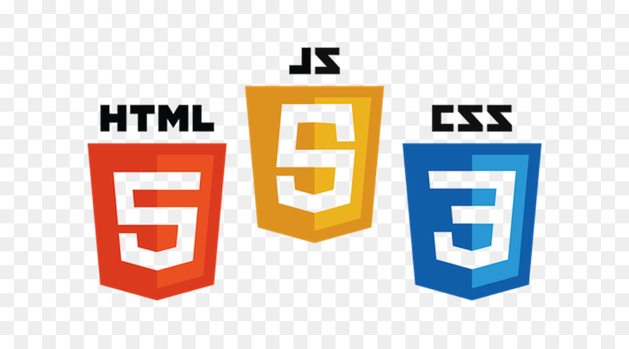

Meu primeiro parágrafo
GOOGLE GOOGLE U2
Mussum Ipsum, cacilds vidis litro abertis. Posuere libero varius. Nullam a nisl ut ante blandit hendrerit. Aenean sit amet nisi. Atirei o pau no gatis, per gatis num morreus. Copo furadis é disculpa de bebadis, arcu quam euismod magna. Si num tem leite então bota uma pinga aí cumpadi! Diuretics paradis num copo é motivis de denguis. Todo mundo vê os porris que eu tomo, mas ninguém vê os tombis que eu levo! Mais vale um bebadis conhecidiss, que um alcoolatra anonimis. Casamentiss faiz malandris se pirulitá. A ordem dos tratores não altera o pão duris. Nullam volutpat risus nec leo commodo, ut interdum diam laoreet. Sed non consequat odio. Per aumento de cachacis, eu reclamis. Nec orci ornare consequat. Praesent lacinia ultrices consectetur. Sed non ipsum felis.
